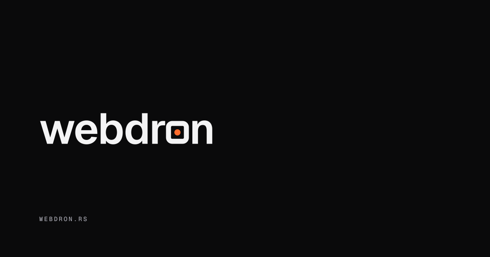
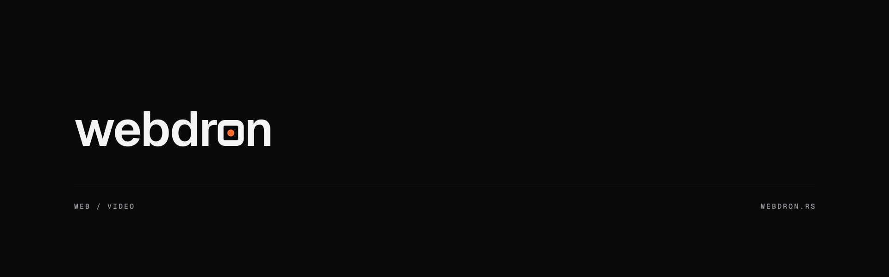

VIZUELNI IDENTITETPRAVAC 2C · NADIRV1 · 11/2026
01
Logo
PRIMARNI · WORDMARK
{{ liveMark }}
<circle id="dot">
REC TREPTANJE NA SAJTU
REC TREPTANJE NA SAJTU
A · LOCKUP SA OZNAKOM · TAMNA
D · LOCKUP SA OZNAKOM · SVETLA
C · BEZ OZNAKE · TAMNA
D · BEZ OZNAKE · SVETLA
B · ZNAK · TAMNA
B · ZNAK · SVETLA
E · JEDNOBOJNA BELA
E · JEDNOBOJNA CRNA
WORDMARK 16 PX
24 PX
ZNAK 16
22
32
Slovo „o“ je zaobljen kvadrat iste debljine kao potezi slova, sa tačkom u centru: ekran posmatran tačno odozgo. Samostalni znak je obris 1,5 px na 22 px.
02
Favicon
Debelo „o“ iz reči umesto tankog obrisa: jače i prepoznatljivije na 16 px.
{{ ic.label }}
{{ ic.file }}
{{ ic.file }}
03
Banner

OG · 1200×630 · ZNAK „O“ = 56 PX
Znak je deo reči, pa nema zasebnog simbola: reč je skalirana tako da „o“-kvadrat ima tačno 56 px. Poravnato levo, mnogo praznog prostora. WEBDRON.RS u donjem levom uglu, poravnato sa logom.

HERO / COVER · 1920×600 · LINIJA HORIZONTA #26262B 1 PX
04
Specifikacija
Pozadina
#0A0A0B
Svetla
#F4F4F5
Linije
#26262B
Sekundarni tekst
#A1A1AA
Akcenat · samo tačka
#FF6B2C
GEIST · SEMIBOLD 600 · −0,02EM
Čist kadar, žive ćelije, šuma, đak
Logotip i naslovi. Č Ć Š Ž Đ č ć š ž đ
GEIST MONO · 500 · VELIKA SLOVA · +0,2EM
AGENCIJA
WEB / VIDEO
ČĆŠŽĐ
WEB / VIDEO
ČĆŠŽĐ
Oznake, metapodaci, URL.
LOGO/
webdron-{dark,light}.svgwebdron-agencija-{dark,light}.svg
webdron(-agencija)-mono-{white,black}.svg
znak-{dark,light,mono-white,mono-black}.svg
FAVICON/
favicon.svgfavicon-16 / 32 / 48 / 96.png
apple-touch-icon.png (180)
android-chrome-192 / 512.png
BANNER/
og-1200x630.svg + .pngcover-1920x600.svg + .png
Sav tekst pretvoren u krive.